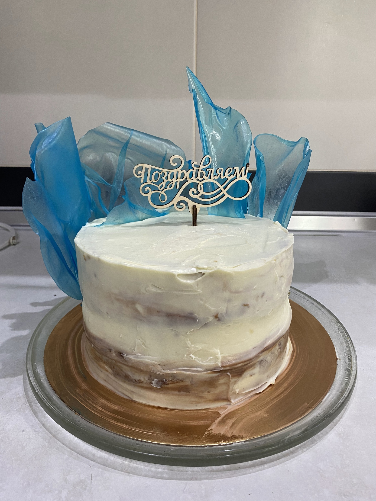
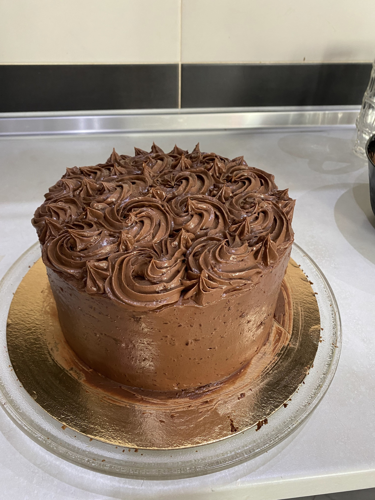
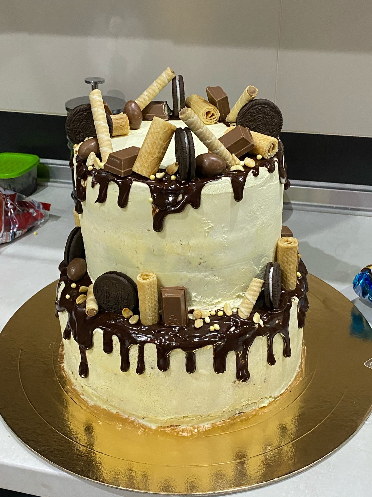
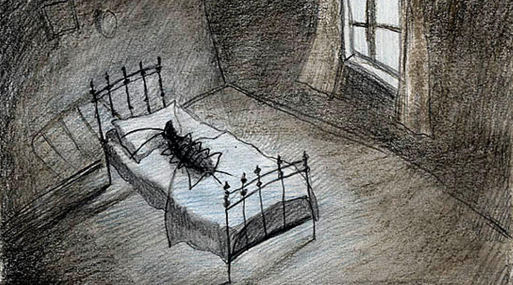
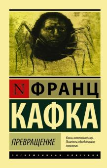

Мои увлечения
Роль хобби в жизни человека

Вообще увлечения играют огромнуютроль в жизни любого человека. Они наполняет и отвлекают от каждодневной рутины. Если каждое утро Вы просыпаетесь в плохом настроении, и у Вас возникают мысли о том, что наша жизнь – бег по кругу, то однозначно настало время что-нибудь менять. Повседневные дела и заботы втягивают нас в серую рутину жизни, которая может навеять нам только апатию и депрессию. И в этой ситуации, наилучшим выходом становится хобби.
Психологи утверждают, что люди, имеющие любимое увлечение, более уверены в себе. Связано это с тем, что человеку просто нужно очень хорошо в чем-то разбираться, чтобы при возможности вызвать к себе интерес, завладеть вниманием слушателей или просто поддержать беседу. Хобби может все это дать. Помимо удовольствия и интереса, хобби развивает память, воображение и творческое мышление. Хобби – это необходимость для каждого из нас.
Приготовление десертов

Чтение книг

Занятия спортом

Приготовление десертов
Готовить различные десерты я начала во время карантина, так было много свободного времени и мне это казалось интересным. Так постепенно я начинала понимать, что делать, что смешивать и как, как декорировать.
А сейчас торты на все дни рождения готовлю я.Понятно, что они далеко не идеальны, но я только начинаю. И, говорят, неплохо у меня это получается.



Чтение книг
На самом деле, с книгами у меня немного старнные отношения. Я очень люблю читать, но только тогда, когда у меня есть к этому настроение. Если совпали все условия, то я читаю очень много и очень быстро, но потом может быть большой перерыв, когда я на книги смотреть даже не хочу.
Я бы хотела поделиться книгой, которая произвела на меня самое большое впечатление, которая действительно заставила меня подумать.
Эта книга - сборник рассказов Франца Кафки "Превращение".


Занятия спортом
Спорт - неотъемлемая часть нашей жизни. Не все любят заниматься спортом, хоть и знают, что он дарит физические силы и здоровье. Я же занимаюсь спортом достаточно часто. Пару раз в неделю я хожу на тренировки в спортивный зал. Также иногда я выхожу на вечернюю пробежку.
Занятия спортом сначала утомляют. Однако со временем человек начинает ощущать, что его тело стало сильнее и выносливее. Очень важно не забывать о том, что со спортом физическое здоровье становится лучше. Я всегда помню об этом, поэтому с уверенностью могу сказать, что спорт играет важную роль в моей жизни.